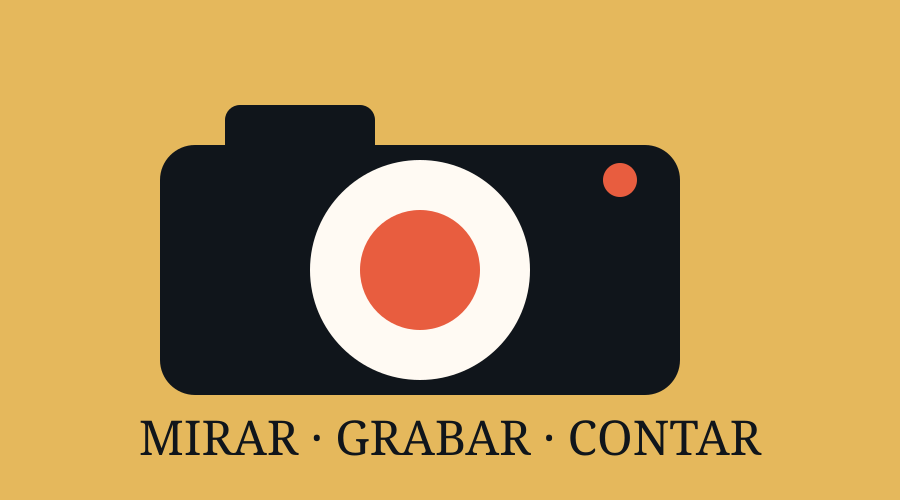
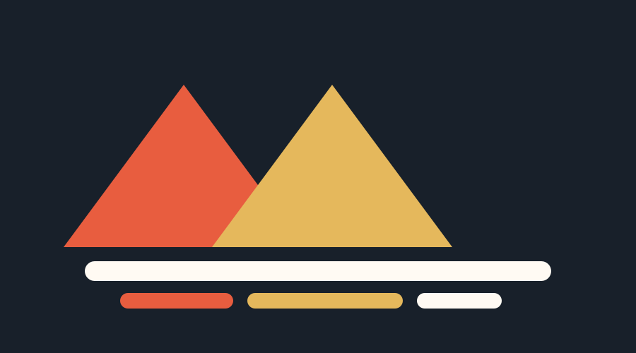

Encuadre
Qué mostrar
Seleccionar un fragmento del espacio también significa decidir qué queda fuera.
El lenguaje audiovisual combina elementos visuales y sonoros para dirigir la atención, crear ritmo y transmitir emociones o información.
| Elemento | ¿Qué aporta? |
|---|---|
| Plano | Define qué parte de la acción verá el espectador y qué tan cerca estará de ella. |
| Ángulo | Modifica la percepción del personaje o espacio desde la posición de la cámara. |
| Movimiento | Puede acompañar una acción, revelar información o generar energía. |
| Luz y color | Ayudan a establecer atmósfera, continuidad y sensaciones. |
| Sonido | Construye contexto, ritmo y emoción; puede ser diegético o externo a la escena. |
“Una decisión visual nunca es solamente decoración: también organiza la forma en que interpretamos una escena.”

Seleccionar un fragmento del espacio también significa decidir qué queda fuera.

El orden de los planos puede cambiar el ritmo y la interpretación de una secuencia.